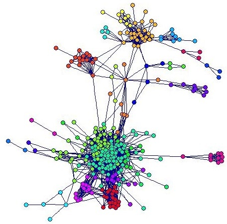
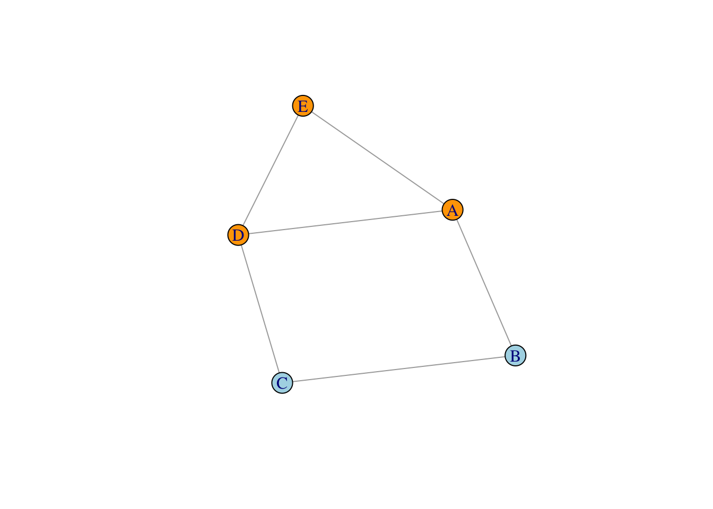
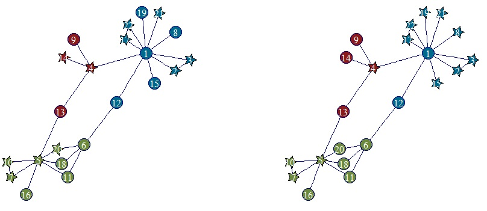
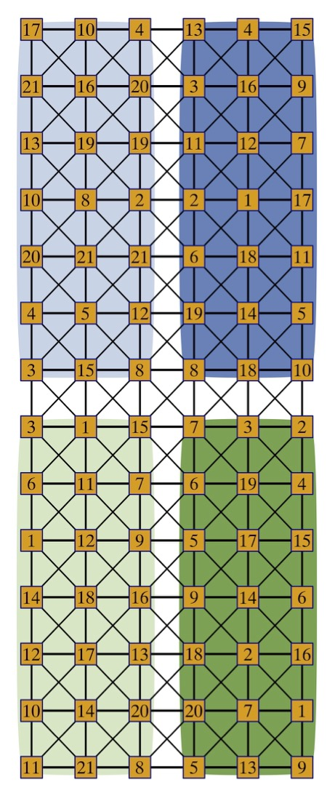

A variety of different experiments from outside the clinical arena can also violate SUTVA due to treatment interference arising from connections between experimental units. One common example is online controlled experiments performed, e.g., by technology companies to assess features on websites and social media platforms (Larsen et al., 2024). Connections between users on these platforms can lead to treatment interference, e.g., by sharing positive or negative experiences. In this vein, Figure 2.1 shows a small subset of the Facebook network, comprising 2514 connections between 324 user. Experimentation on such a network via the application of treatments to users would be susceptible to interference, e.g. via discussions using instant messaging.
Further, there could be distinct communities within the network, with more similar responses expected from users in the same community as opposed to from different communities. In the Facebook network, example communities are indicated by difference colours. Such communities should be incorporated into the design and analysis as a blocking factor.

Figure 2.1: Subset of the Facebook network from the Stanford Data Collection, Colours inducated 24 distinct blocks, or communities, of users.
In addition to the technology industry, networked experiments can be found in many other fields. Indicative examples are given in Table 2.1, along with exemplar interventions and connections. One commong feature of these experiments, in common with the clinical trials in Chapter 1: they all involve people (or animals). In general, it is harder to harder to enforce the assumption of SUTVA on experiments in the human sciences as opposed to, for example, the lab-based or physical sciences.
Suppose that \(n\) experimental units are available for experimentation, formed into a network with connections representing possible routes for treatment interference. This network can be represented as a graph \(\mathcal{G} = (\mathcal{V}, \mathcal{E})\) with vertex set \(\mathcal{V}\) representing the units and edge set \(\mathcal{E}\), of size \(l\), representing the connections between them. The units might be users of a social network, patients in a clinical setting or plots of agricultural land.
These connections can be succinctly represented via the adjacency matrix, \(A = [A]_{jh}\), an \(n\times n\) matrix with \(A_{jh} = \in [0, 1]\) representing the strength of connection between nodes (units) \(j\) and \(h\). We focus on undirected graphs with \(A_{jh} = A_{hj}\). Lack of an edge between nodes \(j\) and \(h\) in \(\mathcal{E}\) leads to \(A_{jh} = A_{hj} = 0\); by convention, \(A_{jj}=0\). A simple example is given in Table 2.2 and Figure 2.2.
Table 2.2: Example adjacency matrix for the graph \(\mathcal{G}\) in Figure 2.2 with \(|\mathcal{V}| = 5\) vertices and \(|\mathcal{E}| = 6\) undirected edges.
A
B
C
D
E
A
0
1
0
1
1
B
1
0
1
0
0
C
0
1
0
1
0
D
1
0
1
0
1
E
1
0
0
1
0
Code
A |>graph_from_adjacency_matrix(mode ="undirected") |>plot(vertex.color =c("orange", "lightblue", "lightblue", "orange", "orange"))

Figure 2.2: Example graph \(\mathcal{G}\) for the adajcency matrix in Table 2.2 with \(|\mathcal{V}| = 5\) vertices and \(|\mathcal{E}| = 6\) undirected edges. Colours indicate an examplar blocking into two groups.
For some applications, necessary blocking factors may be obvious or based on covariates external to the graph, e.g., age or sex. The colours in Figure 2.2 illustrate such a case; see also Section 2.3. For others, it may be necessary or desirable to base the blocks on the graph structure itself, e.g., using spectral clustering (Koutra et al., 2021).
2.2 Optimal designs for networked experiments
2.2.1 Linear network model
The adjacency matrix can be used to incorporate indirect treatment effects into a model for the experiment. Parker et al. (2016) and Koutra et al. (2021) developed the linear network effects model, where the response from unit \(j\) in block \(i\) is modelled with additive block, direct and indirect treatment effects:
Here, \(\beta_i\) is the \(i\)th block effect, \(r(i,j)\) is the treatment applied to the \(j\)th unit in the \(i\)th block, \(\tau_k\) and \(\gamma_k\) are the direct and indirect effects, respectively, of treatment \(k\in\{1,\ldots,t\}\). Use of the adjacency matrix in 2.1 picks out the correct indirect treatment effects, corresponding to the treatments allocated to connected units.
For the graph in Figure Figure 2.2, with adjacency matrix in Table 2.2, the response from node A, the first unit in block 1, would be modelled as:
\[
y_{11} = \mu + \beta_1 + \tau_{r(1,1)} + \gamma_{r(1,2)} + \gamma_{r(1,3)} + \gamma_{r(2,1)} + \varepsilon_{11}\,,
\] with the indirect treatment effects resulting from the edges between node A and nodes D and E (in block 1) and node B (in block 2). The linear network effects model can be estimated using least squares or maximum likelihood, subject to applying suitable parameter constraints or defining a set of estimable contrasts.
2.2.2 Optimality criteria
Two possible aims from the experiment are
estimation of pairwise differences between direct treatment effects, or
estimate of pairwise differences between indirect treatment effects, if primary interest is in the viral effects of a treatment.
In either case, design selection will be based on model (2.1) with direct and indirect treatment effects being mutually adjusted.
For efficient estimation of direct treatment differences, designs are sought that minimise the average variance of the pairwise differences:
If alternative estimable contrasts were of interest, corresponding design selection criteria could be constructed. Designs can be found via application of standard optimisation algorithms, such as point exchange (Cook and Nachtsheim, 1980).
2.2.3 Examples
As a first example, consider the network shown in Figure 2.3, which describes co-authorship links between academics within a university research group (Koutra et al., 2021). There are 22 nodes, split into three blocks, and 27 edges. Interest lies in estimating the effects of two treatments.

Figure 2.3: Block designs for a co-authorship network with colours indicating blocks (identified via spectral clustering) and plotting symbol indicating allocation to treatment 1 or 2. Left: optimal design for estimation of direct effects. Right: optimal design for estimation of indirect effects.
The left-hand plot shows the design for estimating the direct effects, with the right-hand plot giving the design for estimating the indirect effects. The designs are not the same, and in general the structure will depend on the network. The \(\phi_{\tau}\)-optimal design is balanced, with equal replication of each treatment. Treatment allocation is also balanced within each block. Nodes allocated to each treatment have similar first- and second-order degrees (numbers of connections between nodes of distance one or two). Treatment allocation in the \(\phi_{\gamma}\)-optimal design is highly dependent on the network, with highly connected nodes tending to receive a different treatment from their surrounding, less connected, nodes.
Quantitative comparisons can be made between the block network designs (BNDs) from Figure 2.3 and the optimal designs that would result from models that
ignore blocks and network structure (CRD: completely randomised design);
Table 2.3 gives the efficiencies for estimating direct effects for these various designs under the corresponding models. Each row corresponds to one model: CRM (ignoring blocks and network), RBM (ignoring the network), LNM (ignoring blocks) and BNM (including blocks and network structure). Efficiencies are calculated within row; comparisons between rows are not meaningful due to the differing numbers of paramters in the different models.
Table 2.3: Efficiencies for estimating the direct treatment effects for designs with and without blocking and/or indirect effects under different model assumptions.
The importance of including blocks in the optimal design, if they are present in the model. For example, the LND is only 50% efficient if blocks are added to the model. This is because balance within blocks is not achieved by the LND.
The substantial loss in efficiency if network effects are excluded; e.g., the CRD and RBD lose around ~15-25% efficiency compared to the LND/BND.
Table 2.4 gives efficiencies for estimating the indirect effects for the four different designs. The loss of efficiency for designs that ignore network structure is now stark (>80%).
Table 2.4: Efficiencies for estimating the indirect treatment effects for designs with and without blocking under different model assumptions.
Designs
Model
CRD
RBD
LND
BND
LNM
0.16
0.12
1.00
0.64
BNM
0.16
0.16
0.39
1.00
As a second example, we briefly return to the Facebook network in Figure 2.1. For designs to again estimate two treatments, we find
for this network, the CRD and RBD are a little more efficient under \(\phi_\tau\) than in the first example, with average efficienices greater than 90%;
under \(\phi_\gamma\), are again very poor with efficiencies less than 20%.
For both examples, we see that ignoring important indirect effects resulting from network structure in the design of the experiment will reduce the efficiency of direct treatment effect estimation, and almost prevent effective estimation of any indirect effects.
2.3 Case study: agricultural experiment
Formal design of experiments methodology was largely developed in the context of agricultural field trials, especially at the Rothamsted research station at Harpenden. This is also an application area where he potential impact of treatment interference has long been recognised and various methods for both modelling and mitigation proposed and applied. In particular, the impact of neighbouring plots was been widely considered, including through indirect treatment effects (Besag and Kempton, 1986). A typical layout of a field trial is shown in Figure 2.4, clearly showing the proximity of neighbouring plots.
Figure 2.4: Example field layout, as used at Rothamsted
We consider experiments conducted at Rothamsted to study the differences in natural cereal aphid colonization of 21 different wheat varieties (Koutra et al., 2023). Aphids are small insects such on plant sap and can cause considerable crop damage. The experiment was performed in a \(14\times 6\) grid of 1m x 1m plots, see Figure 2.6 which also gives the allocation of the 21 varieties to plots for an experiment performed in 2016. There are sufficient plots for each treatment to be replicated four times.
Figure 2.5: Plot layout for the agricultural example with treatment allocation from the 2016 design. Numbers indicated treatments allocated to each plot.
Treatment interference was thought possible due to the differing levels of susceptibility of different varieties and the strong possibility of aphids moving from plot to plot. Hence, a plot where a very susceptible variety has been planted may lead to neighbouring plots suffering from direct treatment interference. Differing structures governing this interference were considered, represented as graphs. Here, we focus on network illustrated in Figure 2.6, where the connections between (nodes) plots are inversely weighted by spatial distance.

Figure 2.6: Network and optimal design for the wheat field trial. Numbers indicated treatments allocated to each plot.
In addition to direct and indirect treatment effects, the analysis of the experiment needed to account for the spatial structure through the inclusion of blocking factors and row-column effects. The following model was assumed,
with \(R\), \(C\) and \(RC\) representing the effects of super-rows and super-columns, and their interaction (together representing super-blocks). Effects \(r\) and \(c\) are of rows and columns nested inside super-blocks. An analysis of variance based on this model for the 2016 experiment indicated the possibility of treatment interference, with indirect effects significant even after adjusted for direct treatment effects, see Table 2.5. Comparison 1 tests direct effects adjusted for indirect effects, treating the latter as nuisance factors. This comparison is the most relevant for this trial. Comparison 2 tests the impact of indirect effects over and above direct effects, as might be of interest when the viral effects are of primary importance.
Table 2.5: Analysis with network effects for the 2016 wheat experiment.
Sum Sq
Mean Sq
NumDF
DenDF
F-value
p-value
Comparison 1
Indirect effect
32.58
1.63
20.00
31.76
3.24
0.0015
Direct effect
19.34
0.97
20.00
35.48
1.92
0.0437
Comparison 2
Direct effect
32.20
1.61
20.00
35.85
3.20
0.0012
Indirect effect
20.41
1.02
20.00
32.09
2.03
0.0361
An optimal design was sought assuming model (2.4) to allow efficient estimation of the direct treatment effects, using the \(\phi_\tau\)criterion. The design is shown in Figure 2.6. Two features of note are that (i) there is a good spatial spread of treatments, but that (ii) it is also quite common for pairs of connected units to share a treatment. Both these features have been observed in previous row-column and network designs; see Freeman (1979), Parker et al. (2016) and Koutra et al. (2021).
Table 2.6: Efficiencies of optimal designs for various submodels of (2.4) when evaluated under the full model.
Designs
CRD
RBD
RCD
BRCD
LND
BND
RCND
BRCND
Efficiency
0.4
0.43
0.46
0.51
0.46
0.5
0.72
1
Ignoring block and network effects when designing the experiment can, once again, have a substantial impact on the efficiency of the design if these effects are then including at the analysis stage. Table 2.6 shows the efficiencies under the \(\phi_\tau\)-criterion for various submodel of (2.4) (BRCND), ranging from a completely randomised design (CRD) that ignores blocks and network effects to a row-column network design that only ignores super-blocks (RCND). All designs lose at least 28% efficiency. Once again, including network effects but ignoring blocks and/or row-columns (LND, BND) is inefficient as the distribution of the treatments across blocks will be sub-optimal, achieving around the same efficiency as the designs which include row-columns and/or blocks but ignore network effects (RCD, BRCD). Clearly, ignoring network effects at the analysis stage, as well as when designing the experiment, could lead to biased estimates of the direct treatment effects.
Besag, J. and Kempton, R. A. (1986) Statistical analysis of field experiments using neighbouring plots. Biometrics, 231–251.
Cook, R. D. and Nachtsheim, C. J. (1980) A comparison of algorithms for constructing exact d-optimal designs. Technometrics, 315–324.
Freeman, G. H. (1979) Some two-dimensional designs balanced for nearest neighbours. Journal of the Royal Statistical Society B, 88–95.
Koutra, V., Gilmour, S. G. and Parker, B. M. (2021) Optimal block designs for experiments on networks. Journal of the Royal Statistical Society C, 596–618.
Koutra, V., Gilmour, S. G., Parker, B. M., et al. (2023) Design of agricultural field experiments accounting for both complex blocking structures and network effects. Journal of Agricultural, Biological and Environmental Statistics, 526–548.
Larsen, N., Stallrich, J., Sengupta, S., et al. (2024) Statistical challenges in online controlled experiments: A review of A/B testing methodology. The American Statistician, 78, 135–149.
Parker, B. M., Gilmour, S. G. and Schormans, J. (2016) Optimal design of experiments on connected units with application to social networks. Journal of the Royal Statistical Society C, 455–480.